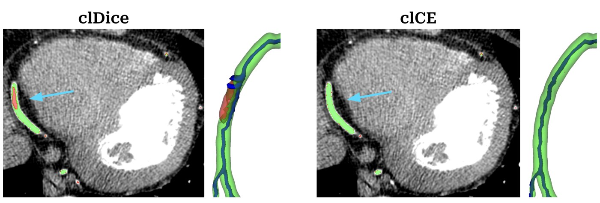
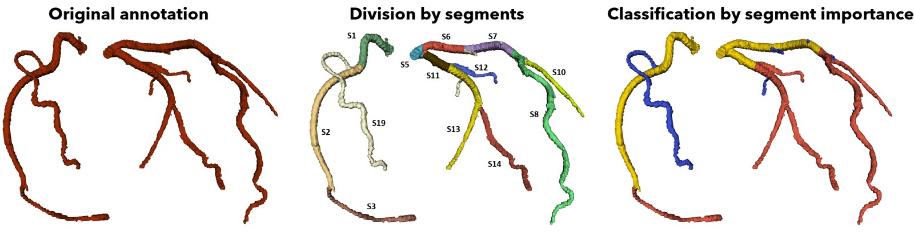
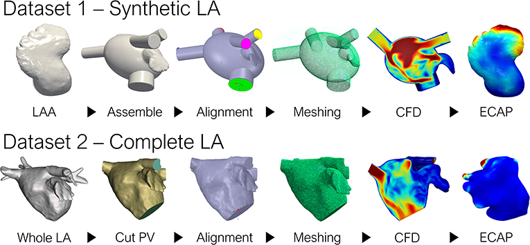
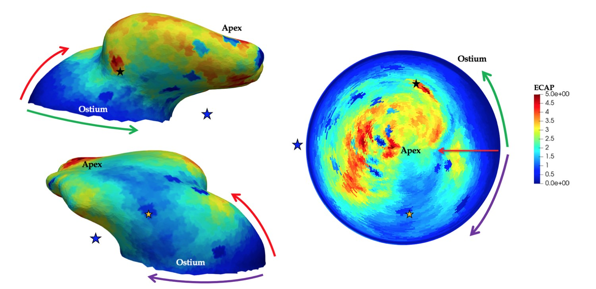

IA Aplicada a la Salut
Doctorat a la Universitat Pompeu Fabra, dirigit per Oscar Camara i Adrián Galdrán. IA integrada en el flux clínic de cardiologia: processament automàtic d'imatge, priorització de llistes de treball i informes automàtics.

Línia de recerca
Segmentació d'artèries coronàries en TC cardíac preservant la topologia.
Publicacions
- 2025A Clinically-Informed Benchmark for Topology-Aware Coronary Artery SegmentationAcebes C, Galdran A, Moustafa AH, Clapers M, Camara OSTACOM 2025 · LNCS 16459DOI

- 2024The Centerline-Cross Entropy Loss for Vessel-Like Structure Segmentation: Better Topology Consistency Without Sacrificing AccuracyAcebes C, Moustafa AH, Camara O, Galdran AMICCAI 2024 · LNCS 15008PDFCodiDOI
- 2021Deep Learning Framework for Real-Time Estimation of in-silico Thrombotic Risk Indices in the Left Atrial AppendageMorales Ferez X, Mill J, Juhl KA, Acebes C, et al.Frontiers in Physiology 12DOI

- 2020A Cartesian Grid Representation of Left Atrial Appendages for a Deep Learning Estimation of Thrombogenic Risk PredictorsAcebes C, Morales X, Camara OSTACOM 2020 · LNCS 12592DOI

Direcció de treballs
14TFG i TFM dirigits · UPF · UB · UPC